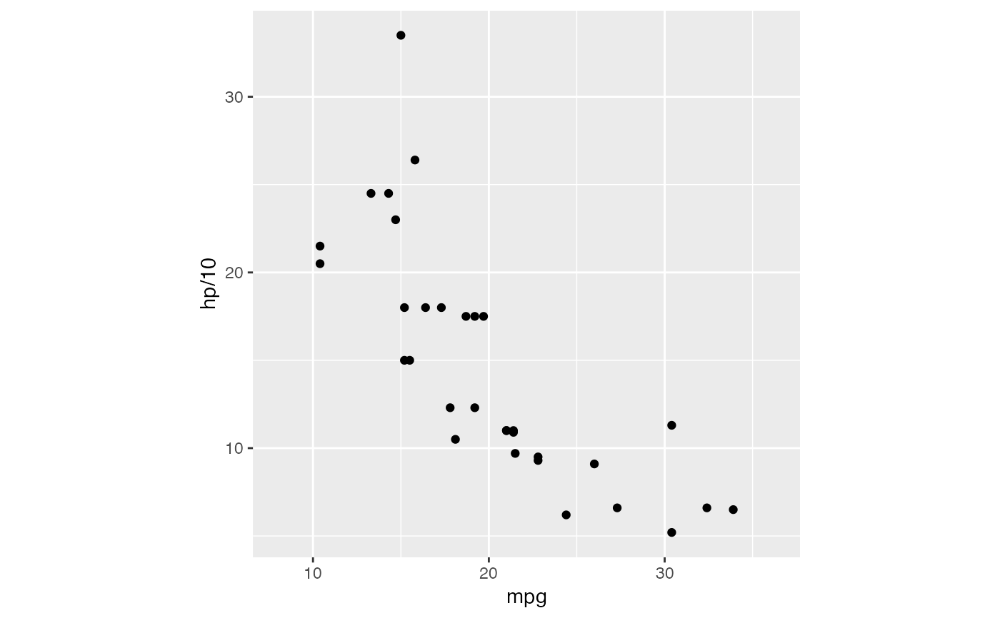
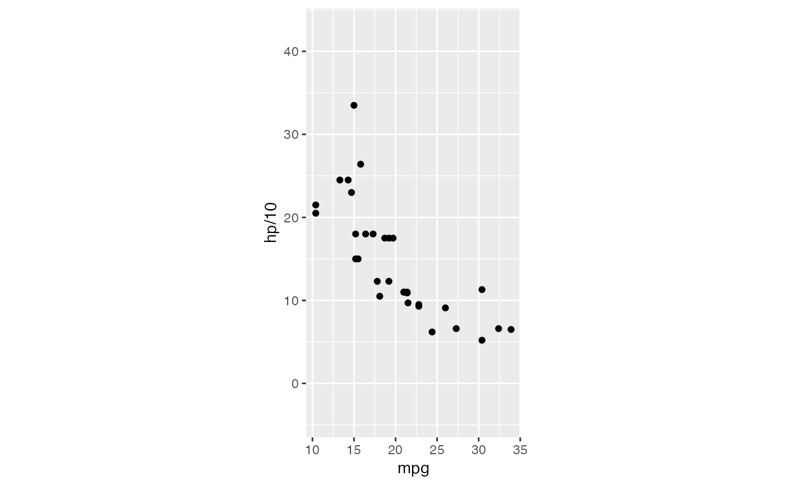
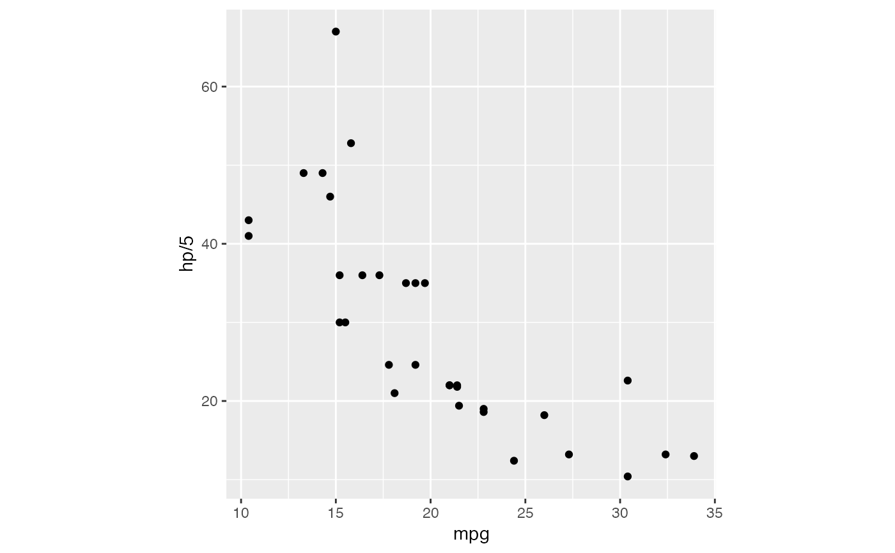
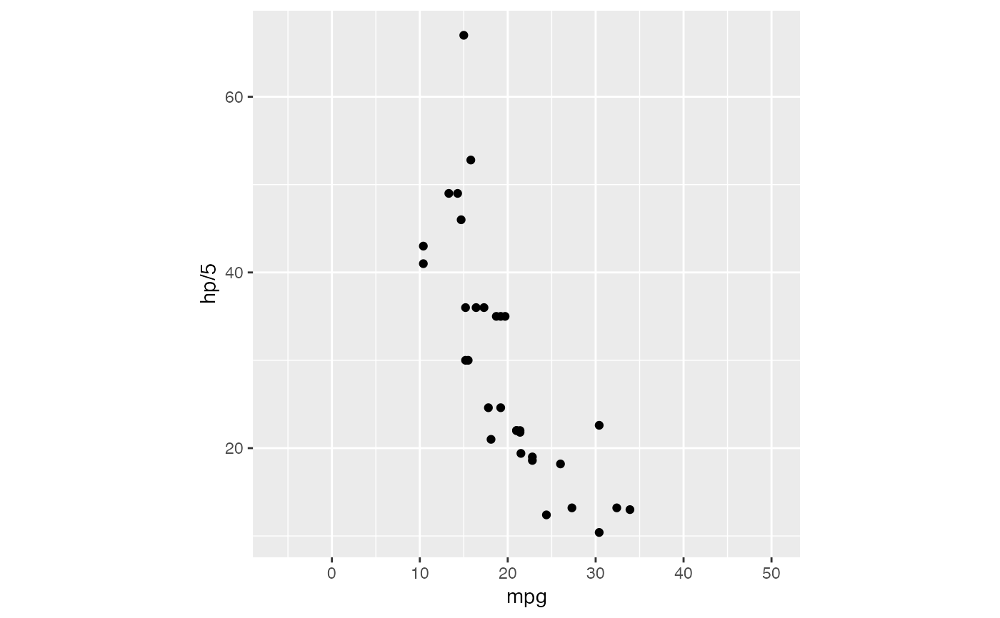
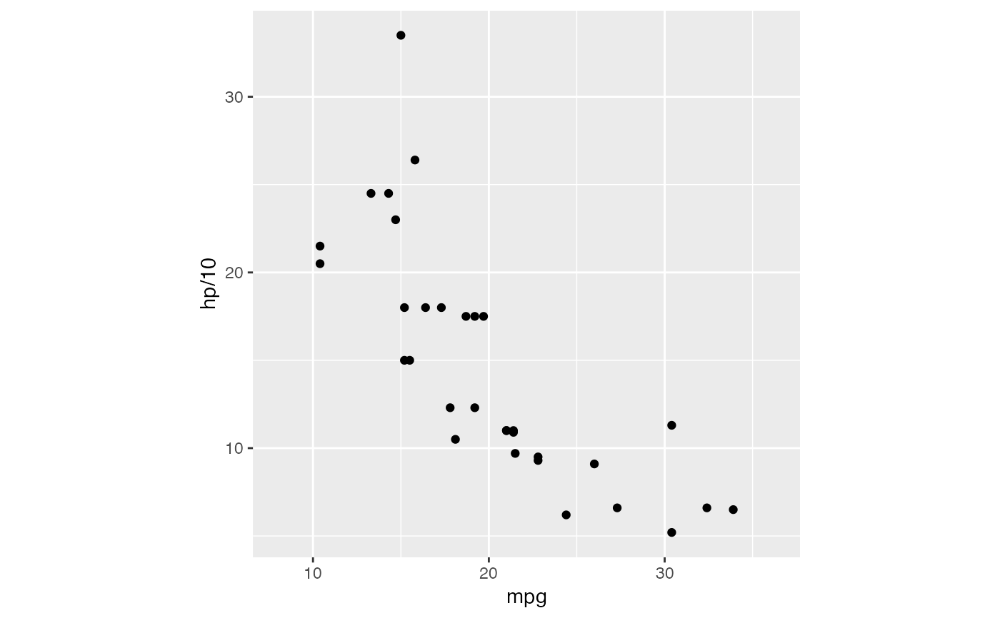
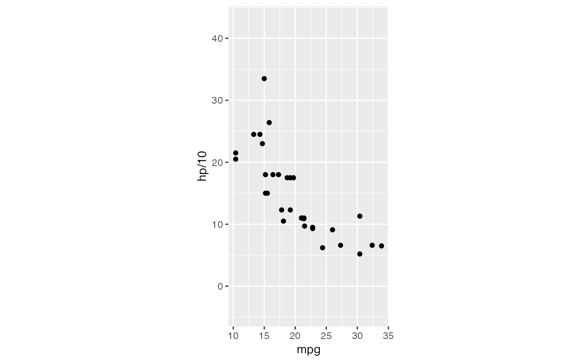
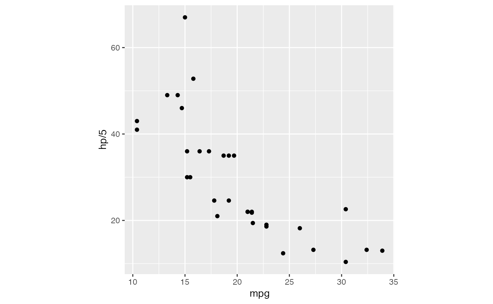
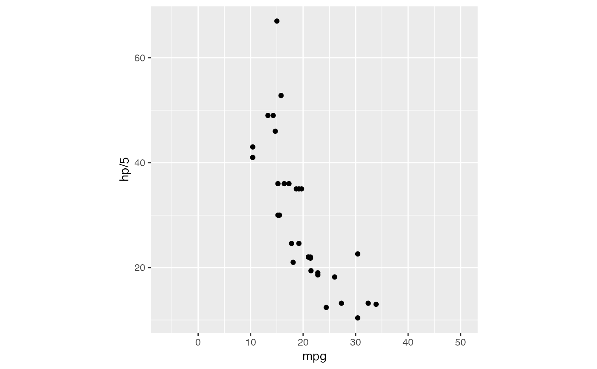

Cartesian coordinates and plotting window with fixed aspect ratios
Source:R/coord-rect.r
coord_rect.Rd2- (and 3-) dimensional biplots require that coordinates lie on
the same scale but may additionally benefit from a square plotting window.
The general-purpose coordinate system CoordRect, alias CoordSquare,
provides control of both coordinate and window aspect ratios, while the
convenience CoordBiplot system fixes the coordinate aspect ratio at 1
and gives the user control only of the plotting window.
coord_rect(
ratio = 1,
window_ratio = ratio,
xlim = NULL,
ylim = NULL,
expand = TRUE,
clip = "on"
)
coord_biplot(
window_ratio = 1,
xlim = NULL,
ylim = NULL,
expand = TRUE,
clip = "on"
)Arguments
- ratio
aspect ratio, expressed as
y / x- window_ratio
aspect ratio of plotting window
- xlim, ylim
Limits for the x and y axes.
- expand
If
TRUE, the default, adds a small expansion factor to the limits to ensure that data and axes don't overlap. IfFALSE, limits are taken exactly from the data orxlim/ylim.- clip
Should drawing be clipped to the extent of the plot panel? A setting of
"on"(the default) means yes, and a setting of"off"means no. In most cases, the default of"on"should not be changed, as settingclip = "off"can cause unexpected results. It allows drawing of data points anywhere on the plot, including in the plot margins. If limits are set viaxlimandylimand some data points fall outside those limits, then those data points may show up in places such as the axes, the legend, the plot title, or the plot margins.
Examples
# ensures that the resolutions of the axes and the dimensions of the plotting
# window respect the specified aspect ratios
p <- ggplot(mtcars, aes(mpg, hp/10)) + geom_point()
p + coord_rect(ratio = 1)
 p + coord_rect(ratio = 1, window_ratio = 2)
p + coord_rect(ratio = 1, window_ratio = 2)
 p + coord_rect(ratio = 1, window_ratio = 1/2)
p + coord_rect(ratio = 1, window_ratio = 1/2)
 p + coord_rect(ratio = 5)
p + coord_rect(ratio = 5)
 p + coord_rect(ratio = 1/5)
p + coord_rect(ratio = 1/5)
 p + coord_rect(xlim = c(15, 30))
p + coord_rect(xlim = c(15, 30))
 p + coord_rect(ylim = c(15, 30))
p + coord_rect(ylim = c(15, 30))
 # Resize the plot to see that the specified aspect ratio is maintained
p <- ggplot(mtcars, aes(mpg, hp/10)) + geom_point()
p + coord_biplot()

p + coord_biplot(window_ratio = 2)

# prevent rescaling in response to `theme()` aspect ratio
p <- ggplot(mtcars, aes(mpg, hp/5)) + geom_point()
p + coord_equal() + theme(aspect.ratio = 1)

p + coord_biplot() + theme(aspect.ratio = 1)

# NB: `theme(aspect.ratio = )` overrides `Coord*$aspect`:
p + coord_fixed(ratio = 1) + theme(aspect.ratio = 1)
p + coord_biplot(window_ratio = 2) + theme(aspect.ratio = 1)
# Resize the plot to see that the specified aspect ratio is maintained
p <- ggplot(mtcars, aes(mpg, hp/10)) + geom_point()
p + coord_biplot()

p + coord_biplot(window_ratio = 2)

# prevent rescaling in response to `theme()` aspect ratio
p <- ggplot(mtcars, aes(mpg, hp/5)) + geom_point()
p + coord_equal() + theme(aspect.ratio = 1)

p + coord_biplot() + theme(aspect.ratio = 1)

# NB: `theme(aspect.ratio = )` overrides `Coord*$aspect`:
p + coord_fixed(ratio = 1) + theme(aspect.ratio = 1)
p + coord_biplot(window_ratio = 2) + theme(aspect.ratio = 1)